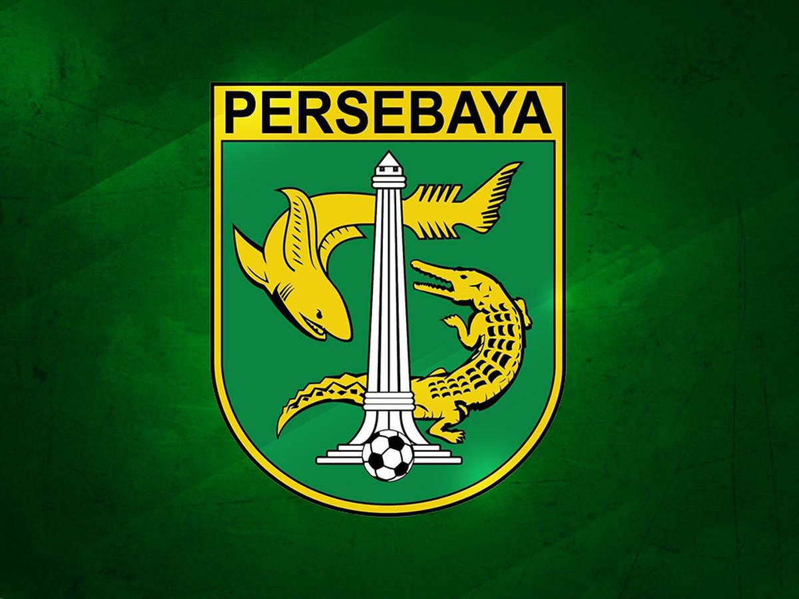

Persebaya Surabaya
Persebaya didirikan pada 18 Juni 1927 oleh Paijo dan M. Pamoedji untuk menjadi wadah bagi masyarakat Surabaya yang mau bermain bola. Saat itu, Persebaya berdiri dengan nama Soerabhaisasche Indonesische Voetbal Bond (SIVB).Sebelum SIVB, ada klub sepakbola lain di Surabaya, yaitu Sorabaiasche Voetbal Bond (SVB) yang berdiri pada 1910. Akan tetapi, klub itu didirikan oleh komunitas Belanda di Surabaya. Selang tiga tahun setelah berdiri, Persebaya ikut dalam suatu kesepakatan besar. Persebaya merupakan satu dari tujuh klub yang mendirikan Persatuan Sepakbola Seluruh Indonesia (PSSI) pada 19 April 1930. SIVB berganti nama menjadi Persibaja (Persatuan Sepak Bola Indonesia Soerabaja) pada 1943. Selang 17 tahun setelahnya, Persibaja berubah nama menjadi Persebaya (Persatuan Sepak Bola Surabaya).